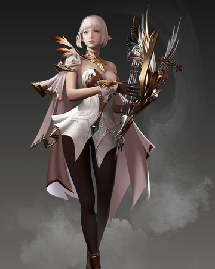
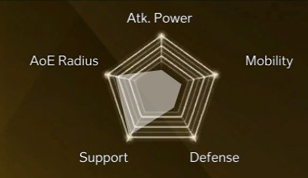
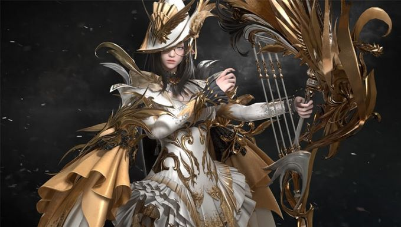

Lost Ark Classes
Class type: Healer
Bard
Virtuosos of the Liane harp, bards can evoke soothing serenades to heal their team—or unleash a chorus of pain on their unfortunate foes. Their attack power is rather low, but their ability to support allies makes them a harmonious part of any team.
The Bard is a support class that utilizes a holy harp to attack foes from a long distance, and support allies from the back. They can damage enemies with sharp melodies, and heal allies with beautiful, mellow notes. Typically in a party, the bard is better suited as a rearguard, rather than a vanguard.
